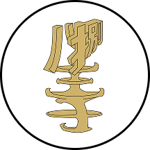
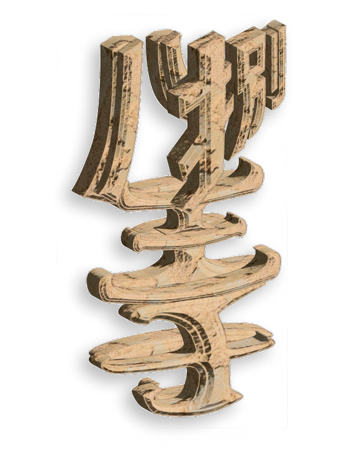
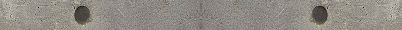
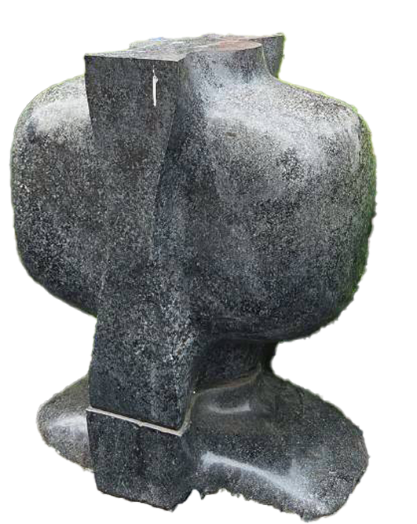
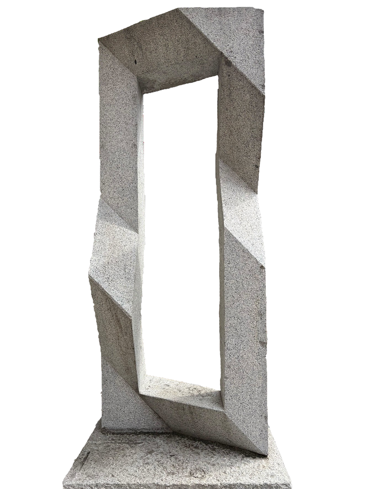
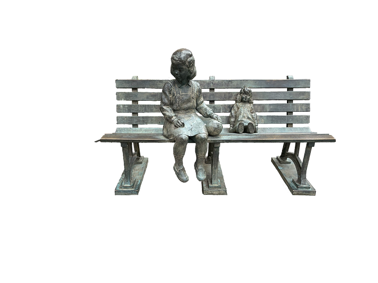
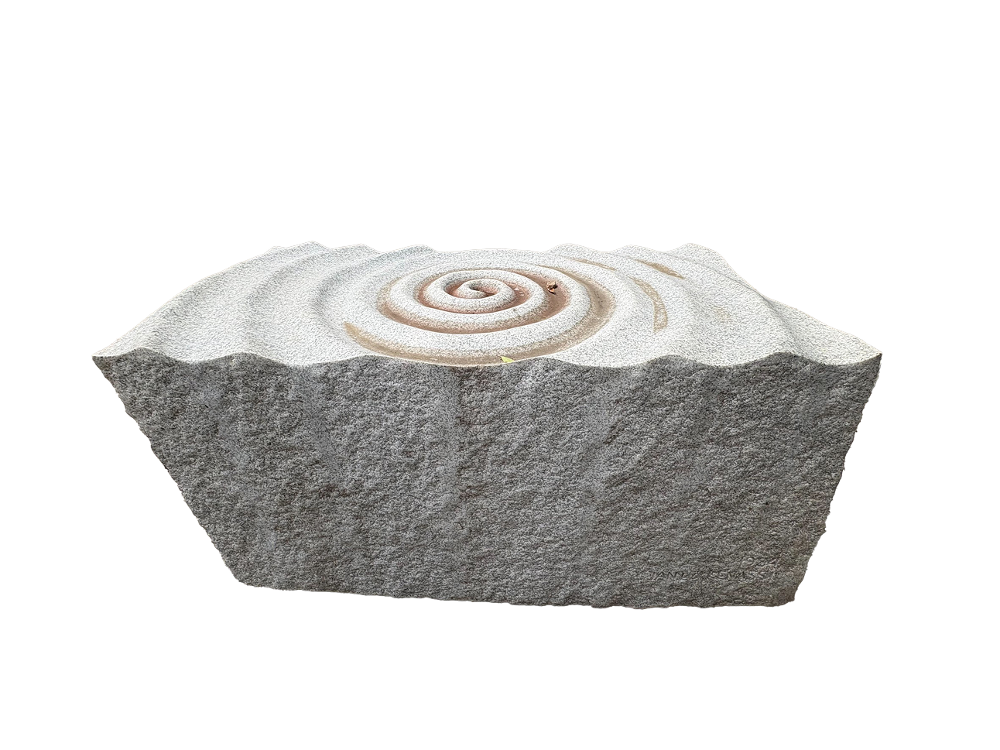

STORY
異界
捌王子
捌王子とは、我々の世界とは全く異なった
歴史をたどった別の八王子です。しかしどういうわけか
八王子と捌王子には同じ彫刻があるようです。
我々は八王子の彫刻を通して捌王子の世界の歴史を
体験していくこととなります。

八王子彫刻巡りスタンプラリー
0%


9月28日〜
12月28日
八王子市彫刻巡り
スタンプラリーとは...
八王子の街に点在する「彫刻」
そこに秘められた「架空の物語」
を巡る体験型デジタルスタンプラリー
YAMAHA × TOKYO ZOKEI UNIVERSITY
位置情報アプリ「Mobilit.E.S」を活用した
産学連携プロジェクト

異界
捌王子とは、我々の世界とは全く異なった
歴史をたどった別の八王子です。しかしどういうわけか
八王子と捌王子には同じ彫刻があるようです。
我々は八王子の彫刻を通して捌王子の世界の歴史を
体験していくこととなります。
YAMAHA
Mobilit.E.S
モビリテス
物語と、歩き出す。そこにある魅力を感動に。
日本各地には、まだ、 届いていない魅力があります。歴史、文化、自然の豊かさ。その場所にしかない物語を、 もっと多くの人に届けたい。 モビリテスは物語の案内人となり地域の価値を、体験に変えます。 さあ、物語と、歩きだそう。
捌王子の世界をのぞいてみよう

異界「捌王子」の記憶。
巡ったエリアの物語と彫刻アーカイブが閲覧可能です。
※各エリアでどれか1つの彫刻をめぐると解放されます。
＼1〜2分で終わります！／
より良いスタンプラリーにするために
みなさんのご意見をぜひお聞かせください！




